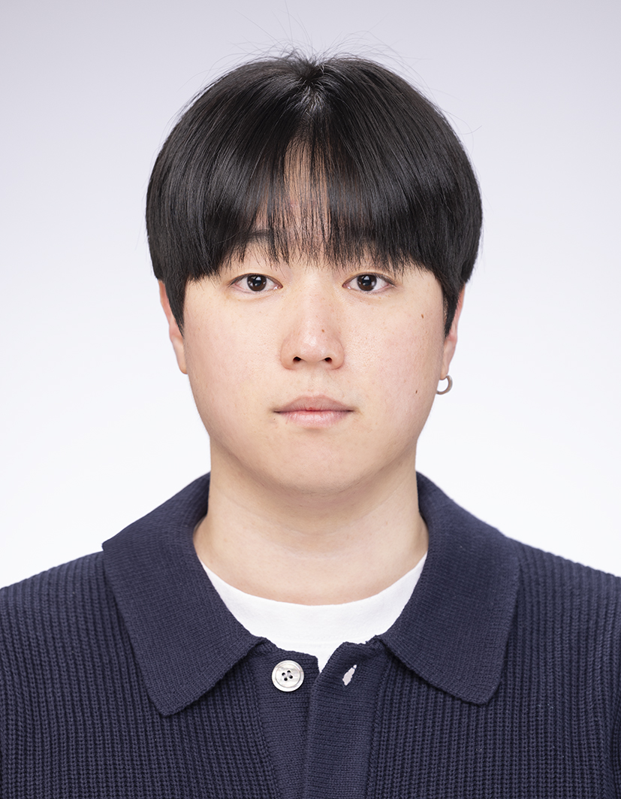

Listening for what
sounds wrong.
Minjun Kim
Artificial Intelligence · Anomalous Sound Detection
about

Hi, I’m Minjun Kim. My main research focus is anomalous sound detection: finding unusual events in machine and environmental audio, often when only normal data is available for training.
Interested in Artificial Intelligence, domain generalization, and unsupervised learning.
project
Live spectrogram detector
배경의 합성 스펙트로그램은 정상 기계음(하모닉) 위에 간헐적인 anomaly를 섞습니다. 오른쪽 위 HUD의 score가 threshold(0.50)를 넘으면 빨간 구간으로 표시됩니다.
event types in the toy model
tone · bearing-like tonal burst
impact · periodic broadband clicks
drift · pitch drift of machine hum
이 데모는 설명을 위한 toy detector입니다. 실제 모델/데이터는 Project 카드에 연결하세요.
Anomalous Sound Detection
정상 소리 분포를 학습하고, reconstruction / embedding 거리로 anomaly score를 계산합니다.
Domain Shift
기계·환경·마이크로폰이 바뀌어도 탐지가 흔들리지 않도록 domain-robust representation을 연구합니다.
Audio Representation Learning
self-supervised / pretrained audio embedding을 ASD downstream에 활용합니다.
[TODO] asd-baseline
실제 프로젝트 레포 링크와 한 줄 설명을 여기에 넣으세요.
Interactive portfolio
합성 spectrogram과 toy detector로 ASD 아이디어를 시각화한 개인 홈페이지.
publication
-
2026[TODO] Anomalous Sound Detection paper / report titleYangJanggu, Co-author · Venue / Course report
-
2025[TODO] Presentation or technical report titleYangJanggu · Workshop / Class presentation
논문이 없으면 수업 보고서·발표 자료로 채워도 됩니다.